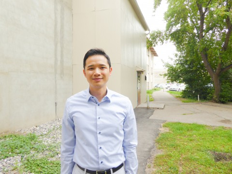

Yu Hin (Gary) Au
Associate Professor (Academic Programming)
Department of Mathematics and Statistics
University of Saskatchewan
Office: 239 McLean Hall
E-mail: Pau@mathQ.usask.caR (with P, Q, and R
removed)
|

|
Hello! I am an Associate Professor in the Department of Mathematics
and Statistics at the University of Saskatchewan. I have what’s akin to
a teaching-stream appointment (hence the “Academic Programming”
designation in my position title), and am particularly focused on the
design and delivery of our undergraduate programs and courses in
mathematics and statistics.
Previously, I completed my Ph.D. in Combinatorics and Optimization at
the University of Waterloo, under the supervision of Levent Tunçel.
After that, I was an Assistant Professor at the Milwaukee School of
Engineering for several years.
Jump to:
Research
My research interest mainly lies in discrete optimization. I like to
study the theory and applications of linear, integer, and semidefinite
programming, with a particular focus on analyzing lift-and-project
methods and their power and limitations in tackling problems that arise
from combinatorial optimization.
More broadly, I am easily attracted to most things discrete
mathematics, such as problems in combinatorics and graph theory.
Publications
Some of my work to date:
- A New Generalization of the Narayana Numbers Inspired by Linear
Operators on Associative d-ary
Algebras
(with Murray
Bremner)
Submitted (2025)
Preprint
- A Computational Search for Minimal Obstruction Graphs for the
Lovász-Schrijver SDP Hierarchy
(with Levent
Tunçel)
Submitted (2025)
Preprint
- Stable Set Polytopes with Rank |V(G)|/3 for the
Lovász-Schrijver SDP Operator
(with Levent
Tunçel)
Submitted (2025)
Preprint
- On Connections Between Association Schemes and Analyses of
Polyhedral and Positive Semidefinite Lift-and-Project Relaxations
(with Nathan Lindzey and Levent Tunçel)
Discrete Mathematics, to appear
Final version /
Preprint
- On Rank-Monotone Graph Operations and Minimal Obstruction Graphs for
the Lovász-Schrijver SDP Hierarchy
(with Levent
Tunçel)
Mathematical Programming 213 (2025), 1169-1209.
Final version /
Preprint
- Stable Set Polytopes with High Lift-and-Project Ranks for the
Lovász-Schrijver SDP Operators
(with Levent
Tunçel)
Mathematical Programming 212 (2025), 79-114.
Final version /
Preprint
- Decompositions of Unit Hypercubes and the Reversion of a Generalized
Möbius Series
Electronic Journal of Combinatorics 31 (2024), Article
P2.26.
Final
version
- Some Properties and Combinatorial Implications of Weighted Small
Schröder Numbers
Journal of Integer Sequences 24 (2021), Article 21.1.1.
Final
version
- Enumeration and Asymptotic Formulas for Rectangular Partitions of
the Hypercube
(with Fatemeh Bagherzadeh and Murray
Bremner)
Journal of Integer Sequences 23 (2020), Article 20.1.4.
Final
version
- Elementary Polytopes with High Lift-and-Project Ranks for Strong
Positive Semidefinite Operators
(with Levent
Tunçel)
Discrete Optimization 27 (2018), 103-129.
Final version
/ Preprint
- Notes and Note-Pairs in Nørgård’s Infinity Series
(with Christopher Drexler-Lemire and Jeffrey Shallit)
Journal of Mathematics and Music 11:1 (2017), 1-19.
Final
version / Preprint
- A Comprehensive Analysis of Polyhedral Lift-and-Project
Methods
(with Levent
Tunçel)
SIAM Journal on Discrete Mathematics 30(1) (2016),
411-451.
Final version / Preprint
- Generalized de Bruijn Words for Primitive Words and Powers
Discrete Mathematics 338(12) (2015), 2320-2331.
Final version /
Preprint
- Complexity Analyses of Bienstock-Zuckerberg and Lasserre Relaxations
on the Matching and Stable Set Polytopes
(with Levent
Tunçel)
Proceedings of the 15th Conference on Integer Programming and
Combinatorial Optimization (2011), 14-26.
Final version
/ Preprint
- Van der Waerden’s Theorem and Avoidability in Words
(with Aaron Robertson and
Jeffrey Shallit)
Integers 11 (2011), 61-76.
Final version / Preprint
- On the Polyhedral Lift-and-Project Methods and the Fractional Stable
Set Polytope
(with Levent
Tunçel)
Discrete Optimization 6(2) (2009), 206-213.
Final version
/ Preprint
- A Comprehensive Analysis of Lift-and-Project Methods for
Combinatorial Optimization
Ph. D. thesis
- On the Polyhedral Lift-and-Project Rank Conjecture for the
Fractional Stable Set Polytope
M. Math thesis
Teaching
I personally find teaching math a deeply satisfying endeavour – I get
to share with others about a subject I’m fascinated with, and play a
small part in facilitating my students’ growth and success.
Learning Tips
In Fall 2025, I spent the first 3–5 minutes of each class discussing
a learning topic with my students. Here are
the slides I used in class:
Desmos Demonstrations
I am an avid user of Desmos in my teaching (as well as simply for my
own amusement). Here are some Desmos demonstrations that fellow
instructors and students may find enlightening. (Note that these were
published in 2022, and thus do not take advantage of some of Desmos’
more recent features.)
Courses Taught
Finally, here is the list of courses I have taught at various
places:
University of Saskatchewan (2018-)
- MATH 110 – Calculus I
- MATH 116 – Calculus II
- MATH 123 – Calculus I for Engineers
- MATH 124 – Calculus II for Engineers
- MATH 133 – Engineering Mathematics I
- MATH 134 – Engineering Mathematics II
- MATH 163 – Introduction to Mathematical Reasoning
- MATH 266 – Linear Algebra I
- MATH 336 – Mathematical Modelling I
- STAT 103 – Elementary Probability
- STAT 242 – Statistical Theory and Methodology
Milwaukee School of Engineering (2014-2017)
- MA 120 – Precalculus Mathematics
- MA 136 – Calculus I
- MA 137 – Calculus II
- MA 231 – Calculus III
- MA 232 – Calculus IV
- MA 2310 – Discrete Mathematics I
- MA 262 – Probability and Statistics
- MA 343 – Linear Programming
- MA 344 – Nonlinear Programming
- MA 481 – Game Theory
University of Waterloo (2012-2014)
- CO 250 – Introduction to Optimization
- MATH 235 – Linear Algebra II
- MATH 215 – Linear Algebra for Engineering
Last updated: 2026-01-02.